I'm learning German (Deutsch) and using this page as a living notebook - every screenshot, table, or note I collect goes here so I can review it from my phone, laptop, or anywhere else without digging through folders. It will keep growing over time.
Links & Resources
Books, channels, and other resources I'm using to learn German — a few links per row to keep it compact.
Das Alphabet
The German alphabet, with a rough Bangla/English phonetic guide for each letter.
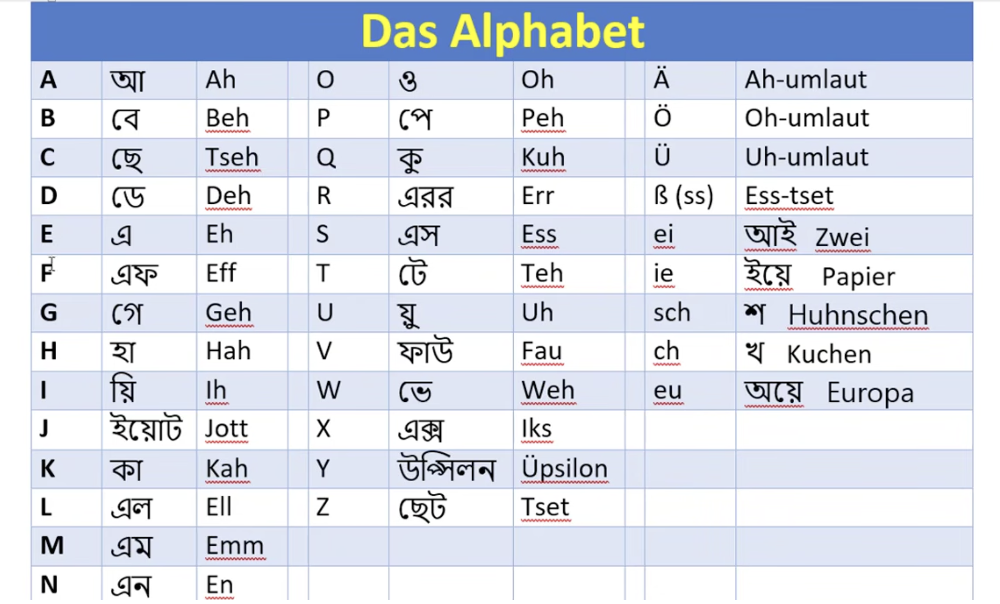
Letters A-Z
| Letter | Bangla | Sounds like |
|---|---|---|
| A | আ | Ah |
| B | বে | Beh |
| C | ছে | Tseh |
| D | ডে | Deh |
| E | এ | Eh |
| F | এফ | Eff |
| G | গে | Geh |
| H | হা | Hah |
| I | য়ি | Ih |
| J | ইয়োট | Jott |
| K | কা | Kah |
| L | এল | Ell |
| M | এম | Emm |
| N | এন | En |
| O | ও | Oh |
| P | পে | Peh |
| Q | কু | Kuh |
| R | এরর | Err |
| S | এস | Ess |
| T | টে | Teh |
| U | য়ু | Uh |
| V | ফাউ | Fau |
| W | ভে | Weh |
| X | এক্স | Iks |
| Y | উপ্সিলন | Üpsilon |
| Z | ছেট | Tset |
best link: https://learngerman.dw.com/en/beginners/s-62078399
Umlauts & special letters
| Letter | Sounds like |
|---|---|
| Ä | Ah-umlaut |
| Ö | Oh-umlaut |
| Ü | Uh-umlaut |
| ß (ss) | Ess-tset |
Common sound combinations
| Combo | Bangla | Example word |
|---|---|---|
| ei | আই | Zwei |
| ie | ইয়ে | Papier |
| sch | শ | Hühnchen |
| ch | খ | Kuchen |
| eu | অয়ে | Europa |
Pronunciation Dictionary
Using dict.cc - a free German–English dictionary - to look up word meanings and pronunciation whenever I hit a new word.
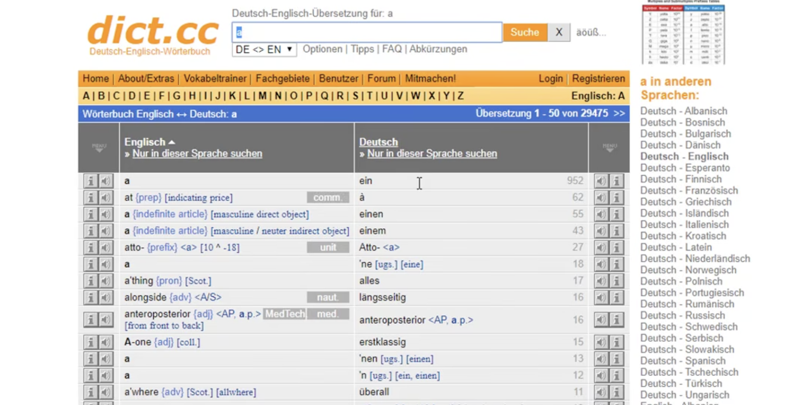
Reverso Context — translations in real sentences
context.reverso.net is one of the best sites for learning German. Instead of a single dictionary meaning, it shows every common way a phrase is translated, with real example sentences from books, films and websites.
Example: searching "ich darf" (German → English) gives I can, I would, I may, I'm, I should, let me, may I, I get to, I could, I'll, I might, allow me, I am allowed, mind if I, you don't mind. This shows how one short German phrase can have many English meanings depending on the context.
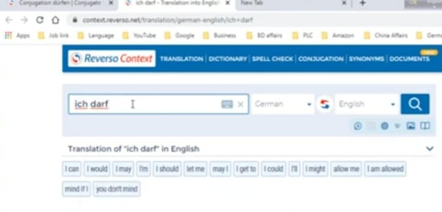
Die Nummer (Numbers)
Numbers 0–31. From 21 onward, German builds numbers as "unit + und (and) + ten", e.g. einundzwanzig = one-and-twenty = 21.
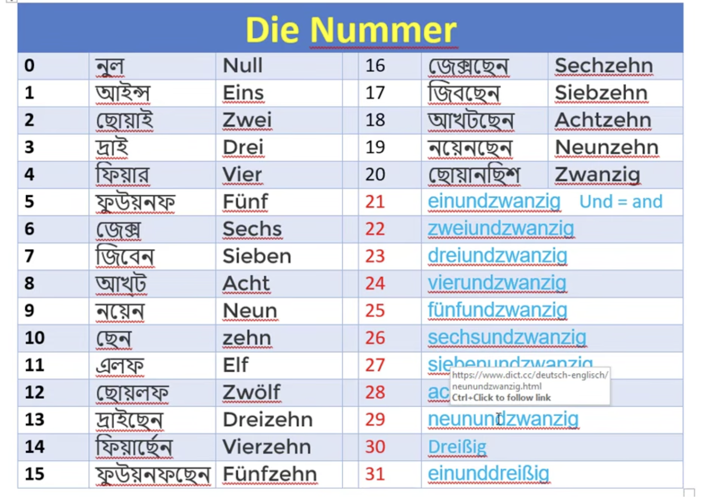
| # | German | # | German |
|---|---|---|---|
| 0 | Null | 16 | Sechzehn |
| 1 | Eins | 17 | Siebzehn |
| 2 | Zwei | 18 | Achtzehn |
| 3 | Drei | 19 | Neunzehn |
| 4 | Vier | 20 | Zwanzig |
| 5 | Fünf | 21 | Einundzwanzig |
| 6 | Sechs | 22 | Zweiundzwanzig |
| 7 | Sieben | 23 | Dreiundzwanzig |
| 8 | Acht | 24 | Vierundzwanzig |
| 9 | Neun | 25 | Fünfundzwanzig |
| 10 | Zehn | 26 | Sechsundzwanzig |
| 11 | Elf | 27 | Siebenundzwanzig |
| 12 | Zwölf | 28 | Achtundzwanzig |
| 13 | Dreizehn | 29 | Neunundzwanzig |
| 14 | Vierzehn | 30 | Dreißig |
| 15 | Fünfzehn | 31 | Einunddreißig |
Personal Pronouns
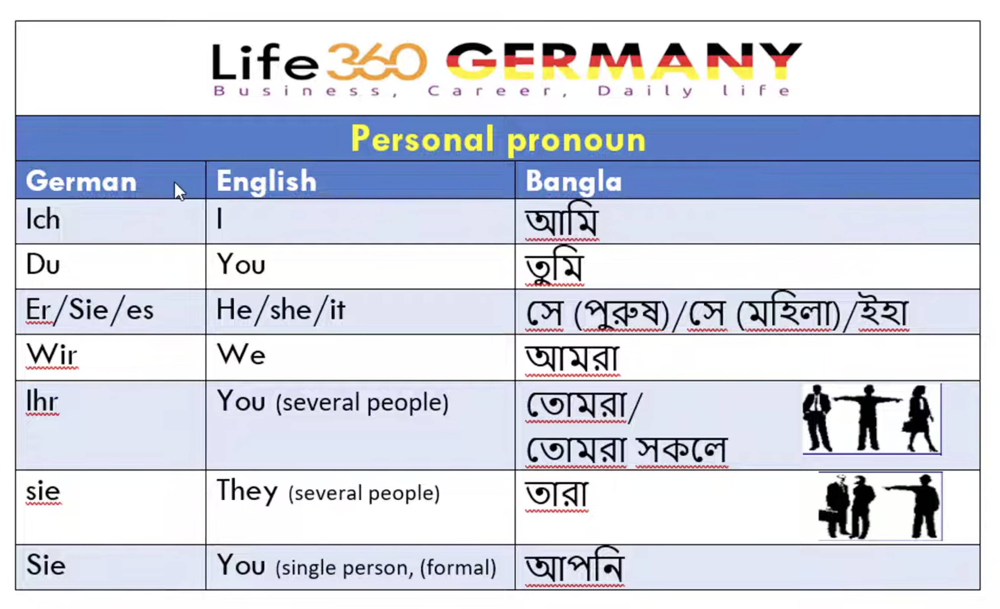
| German | English | Bangla |
|---|---|---|
| Ich | I | আমি |
| Du | You (informal, singular) | তুমি |
| Er / Sie / es | He / She / It | সে (পুরুষ) / সে (মহিলা) / ইহা |
| Wir | We | আমরা |
| Ihr | You (several people) | তোমরা / তোমরা সকলে |
| sie | They (several people) | তারা |
| Sie | You (single person, formal) | আপনি |
Verb Conjugation (Subject–Verb Agreement)
Just like subject–verb agreement in English (I go / he goes), a German verb changes its ending depending on the subject — but German changes it for every person, not just he/she/it.
How to conjugate a regular verb in the present tense:
- Take the infinitive, e.g. gehen (to go).
- Cancel (remove) the -en ending → the stem is geh.
- Add the ending that matches the subject: e, st, t, en, t, en.
Formula: Stem + e, st, t, en, t, en
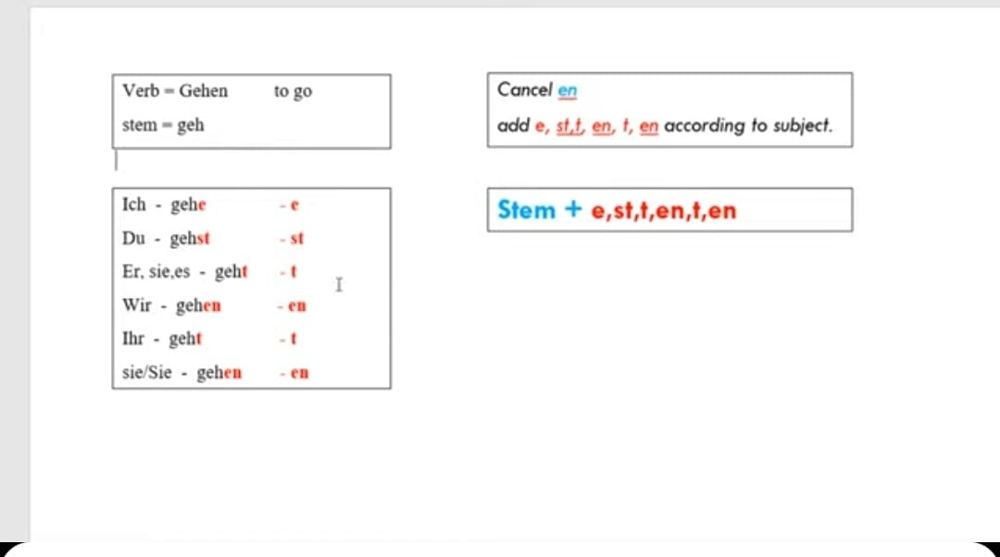
| Subject | Ending | gehen (to go) | English |
|---|---|---|---|
| Ich | -e | gehe | I go |
| Du | -st | gehst | You go (informal) |
| Er / sie / es | -t | geht | He / she / it goes |
| Wir | -en | gehen | We go |
| Ihr | -t | geht | You go (plural, informal) |
| sie / Sie | -en | gehen | They go / You go (formal) |
Same rule with other verbs
| Subject | lernen (to learn) | wohnen (to live) | trinken (to drink) |
|---|---|---|---|
| Ich | lerne | wohne | trinke |
| Du | lernst | wohnst | trinkst |
| Er / sie / es | lernt | wohnt | trinkt |
| Wir | lernen | wohnen | trinken |
| Ihr | lernt | wohnt | trinkt |
| sie / Sie | lernen | wohnen | trinken |
Tip: the wir and sie/Sie forms always look the same as the infinitive. When the stem ends in -t or -d (arbeiten, finden), add an extra e so the verb is easier to say: du arbeitest, er arbeitet, ihr findet.
W-Questions (W-Fragen)
German question words almost all start with W (like English "wh-" words). In a W-question the question word comes first and the conjugated verb comes second: Wo wohnst du? (Where do you live?)
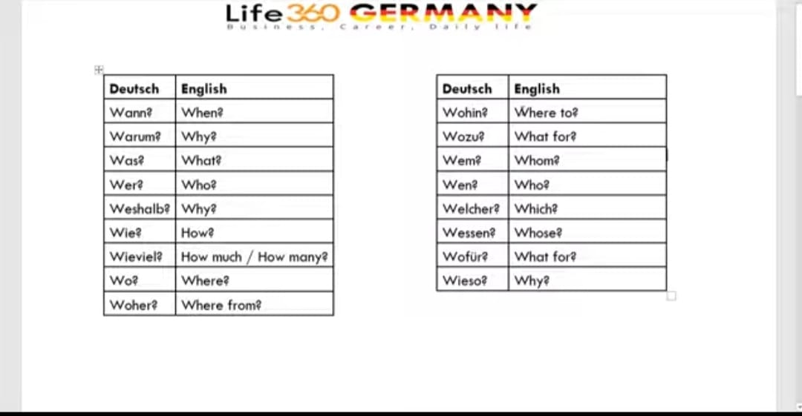
| Deutsch | English | Deutsch | English |
|---|---|---|---|
| Wann? | When? | Wohin? | Where to? |
| Warum? | Why? | Wozu? | What for? |
| Was? | What? | Wem? | (To) whom? (dative) |
| Wer? | Who? | Wen? | Whom? (accusative) |
| Weshalb? | Why? | Welcher? | Which? |
| Wie? | How? | Wessen? | Whose? |
| Wieviel? | How much / How many? | Wofür? | What for? |
| Wo? | Where? | Wieso? | Why? |
| Woher? | Where from? |
Tip: Warum, Weshalb and Wieso all mean "why". Wo / Woher / Wohin mean where / where from / where to: Woher kommst du? (Where do you come from?) — Wohin gehst du? (Where are you going?)
Modal Verbs
Modal verbs (can, must, should, may, like, want, would like) change with the subject, but they are irregular: they don't follow the normal stem + e, st, t, en, t, en rule. Note that the ich and er/sie/es forms are always the same and have no ending (ich kann, er kann).
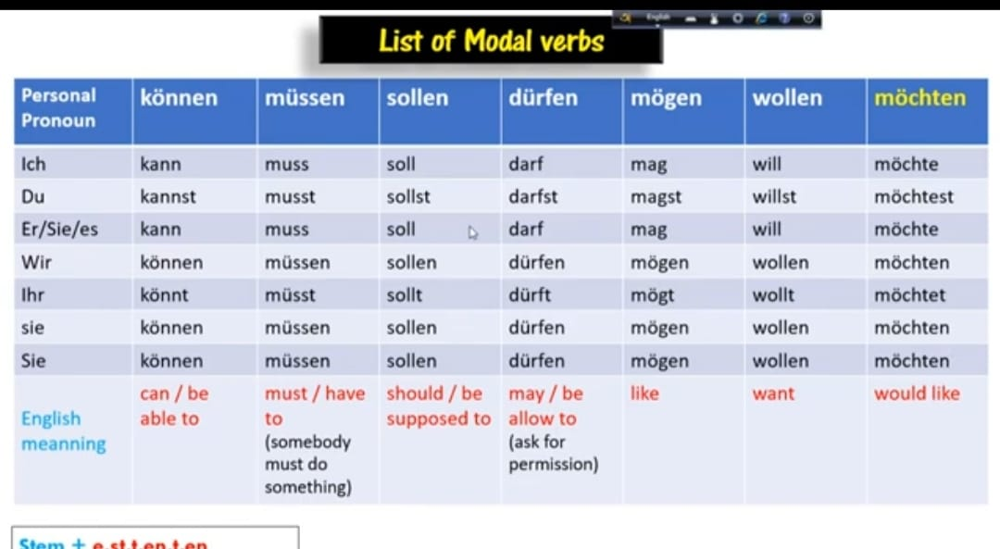
| Pronoun | können | müssen | sollen | dürfen | mögen | wollen | möchten |
|---|---|---|---|---|---|---|---|
| Ich | kann | muss | soll | darf | mag | will | möchte |
| Du | kannst | musst | sollst | darfst | magst | willst | möchtest |
| Er / Sie / es | kann | muss | soll | darf | mag | will | möchte |
| Wir | können | müssen | sollen | dürfen | mögen | wollen | möchten |
| Ihr | könnt | müsst | sollt | dürft | mögt | wollt | möchtet |
| sie | können | müssen | sollen | dürfen | mögen | wollen | möchten |
| Sie | können | müssen | sollen | dürfen | mögen | wollen | möchten |
| Meaning | can / be able to | must / have to | should / be supposed to | may / be allowed to (ask for permission) | like | want | would like |
Word order with modal verbs
- Put the modal verb right after the subject in statements (position 2).
- Put the main verb (infinitive) at the very end of the sentence.
- In yes/no questions, the modal verb comes first: Können wir … ?
Ich kann sehr gut Deutsch sprechen. — I can speak German very well.
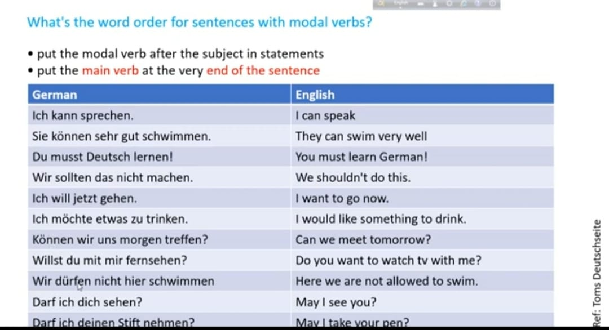
| German | English |
|---|---|
| Ich kann sprechen. | I can speak. |
| Sie können sehr gut schwimmen. | They can swim very well. |
| Du musst Deutsch lernen! | You must learn German! |
| Wir sollten das nicht machen. | We shouldn't do this. |
| Ich will jetzt gehen. | I want to go now. |
| Ich möchte etwas zu trinken. | I would like something to drink. |
| Können wir uns morgen treffen? | Can we meet tomorrow? |
| Willst du mit mir fernsehen? | Do you want to watch TV with me? |
| Wir dürfen nicht hier schwimmen. | Here we are not allowed to swim. |
| Darf ich dich sehen? | May I see you? |
| Darf ich deinen Stift nehmen? | May I take your pen? |
Note: sollten (in "Wir sollten das nicht machen") is the "should" form of sollen — softer advice than sollen.
Common German Verbs
A list of the most common everyday verbs (from a "50 Common German Verbs" sheet). Most of them are regular, so they follow the stem + e, st, t, en, t, en rule.
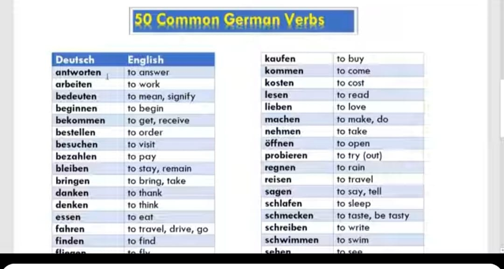
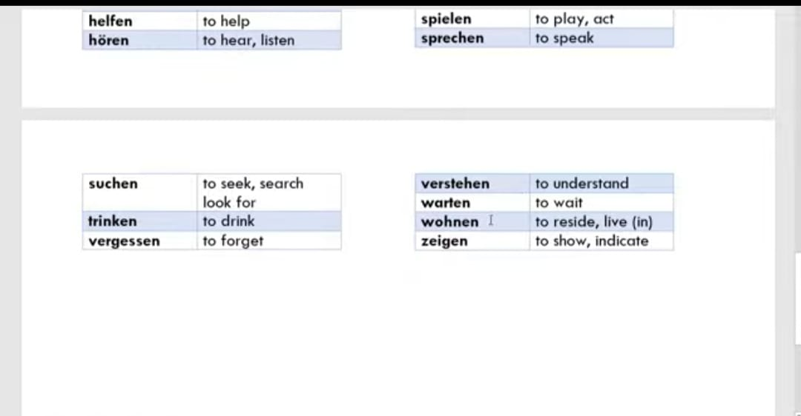
| Deutsch | English | Deutsch | English |
|---|---|---|---|
| antworten | to answer | kaufen | to buy |
| arbeiten | to work | kommen | to come |
| bedeuten | to mean, signify | kosten | to cost |
| beginnen | to begin | lesen | to read |
| bekommen | to get, receive | lieben | to love |
| bestellen | to order | machen | to make, do |
| besuchen | to visit | nehmen | to take |
| bezahlen | to pay | öffnen | to open |
| bleiben | to stay, remain | probieren | to try (out) |
| bringen | to bring, take | regnen | to rain |
| danken | to thank | reisen | to travel |
| denken | to think | sagen | to say, tell |
| essen | to eat | schlafen | to sleep |
| fahren | to travel, drive, go | schmecken | to taste, be tasty |
| finden | to find | schreiben | to write |
| fliegen | to fly | schwimmen | to swim |
| helfen | to help | sehen | to see |
| hören | to hear, listen | spielen | to play, act |
| suchen | to seek, search, look for | sprechen | to speak |
| trinken | to drink | verstehen | to understand |
| vergessen | to forget | warten | to wait |
| wohnen | to reside, live (in) | ||
| zeigen | to show, indicate |